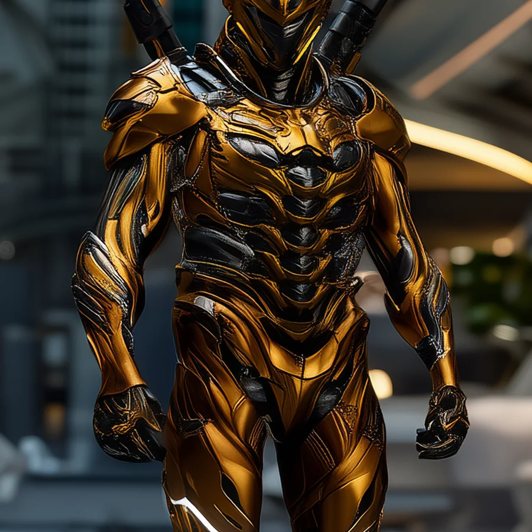
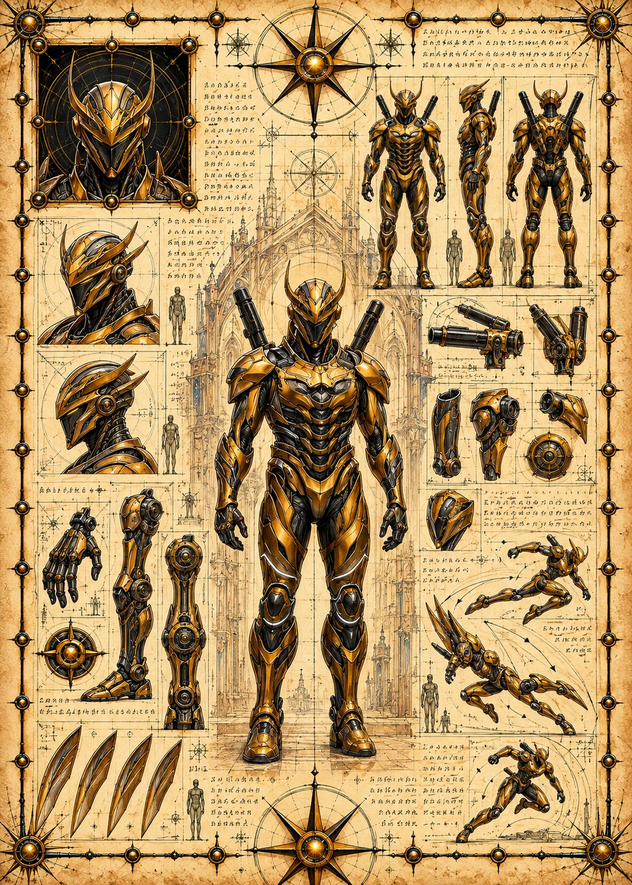

©
©
GENEZYS ARCHIVE · Earth 1 · Legionnaire
Geris
Lattice Patron

Archive record
Geris tends a crystal lattice the way others tend a garden. The Gem Cage seeds a slow quantum burn into every enemy on the field. The Wardens say a bond-stone grows only for those who are patient with it. Geris's has grown larger than any other.
Combat signature
Gem Cage
210 Cosmara
130 Animus
170 Vitalis
Seeds a lingering burn of quantum power: Deals 30 damage to all enemies for 2 rounds.
Genezys 05:02 ™&©2026LEGIONS
